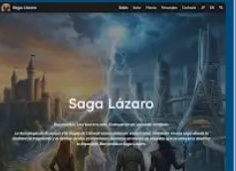
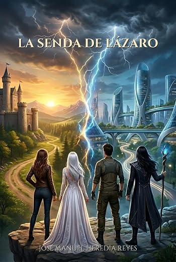
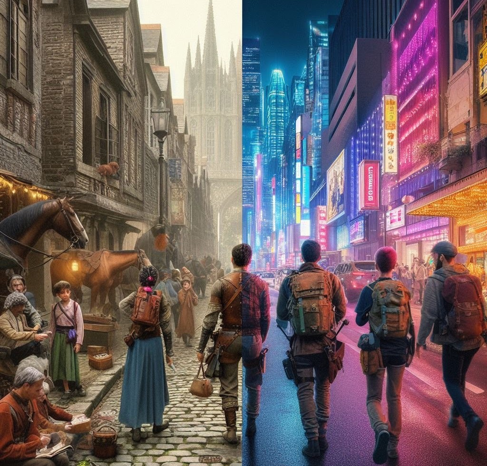
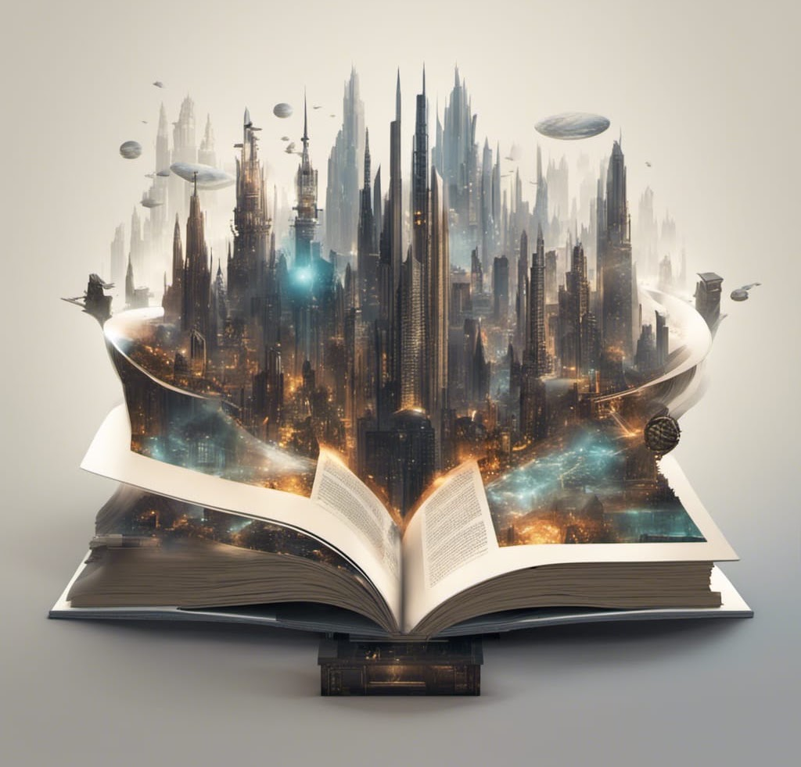
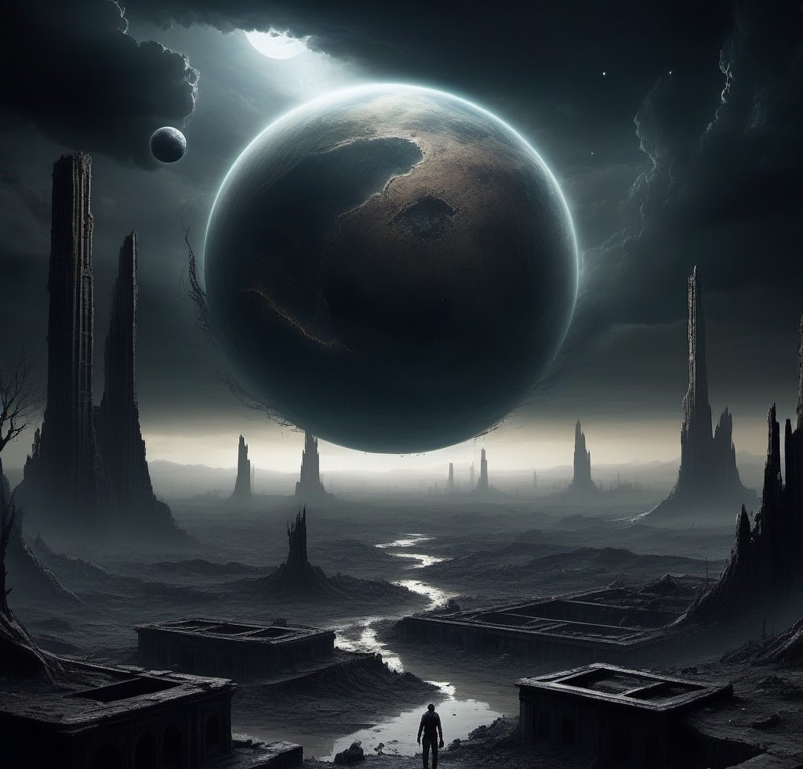
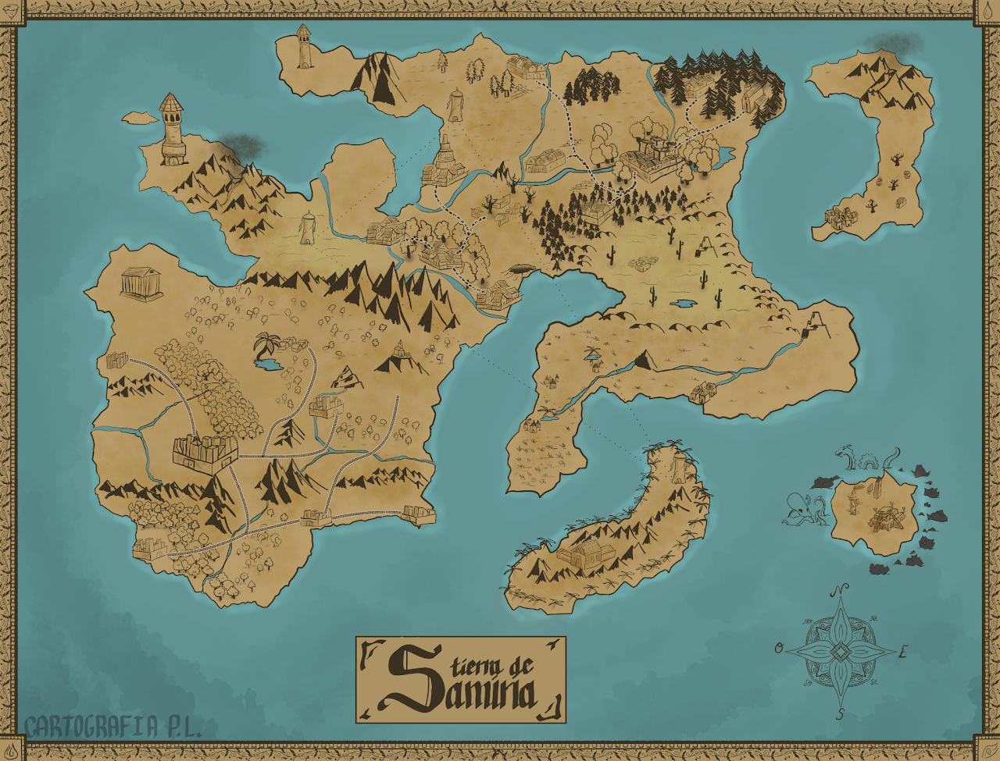

Saga Lázaro
Dos mundos. Una barrera rota. El despertar de un poder olvidado.
La tecnología de Arcanum y la magia de Celestia nunca debieron encontrarse. Adéntrate en una saga donde la realidad se fragmenta y el destino de dos civilizaciones descansa en manos de aquellos que se atreven a desafiar lo imposible.
Las Novelas de la Saga
Descubre los libros ya publicados en español e inglés, disponibles en Amazon Kindle, tapa blanda y en la editorial española Adarve.

La senda de Lázaro: El choque de dos mundos
Por José Manuel Heredia y Elena García
El secreto de Lázaro: El despertar de la verdad
Por José Manuel Heredia y Elena García
Las Cuatro Fases de la Saga
La trayectoria completa de la saga, desde las novelas publicadas hasta la precuela y el desenlace final.

Fase I · Primer libroEl choque de dos mundos
La barrera ha caído. La tecnología y la magia se enfrentan mientras un grupo de elegidos despierta en un mundo fracturado. La leyenda comienza aquí.

Fase II · Segundo libroEl despertar de la verdad
Nada es lo que parece. El verdadero rostro de Lázaro y el propósito de los elegidos salen a la luz contra el auténtico enemigo.
El Origen de las Esferas
Antes de la colisión, hubo una chispa. Descubre el pasado oscuro de Lázaro, la ambición de Aiden y el nacimiento de todo hace un siglo.

Fase IV · DesenlaceEl Destino Final
Un futuro aún no escrito. El desenlace que cambiará la historia para siempre permanece oculto en las sombras...
El Mapamundi de Samiria
Explora la cartografía oficial del continente, sus tres grandes regiones y las ciudades donde transcurre la trama.

Tierras Modernas (Oeste)
El territorio de Sarah y TaosUna civilización marcada por un acelerado desarrollo tecnológico, el control estricto del régimen y la vida en urbes amuralladas conectadas por ferrocarril eléctrico.
Tierras Neutrales (Norte)
Comercio, frontera & enigmasLa región intermedia entre los dos grandes mundos. No responde a ningún bando directo y vive volcada al intercambio, la cultura y la investigación.
Tierras del Reino (Este)
El hogar de Yui y la magia elementalUna sociedad de raíces medievales y fantásticas, donde los elementos primordiales, la dinastía real y la naturaleza indómita marcan el compás cotidiano.
Los Protagonistas y Figuras Clave
Conoce a los jóvenes elegidos que desafían a dos civilizaciones y a las fuerzas que mueven los hilos del conflicto.
Sarah
Dones Psíquicos & Determinación
Joven de belleza serena y gracia etérea. Bajo un aura reservada y reflexiva, oculta una mirada perspicaz y dones mentales extraordinarios. Su amor incondicional por su hermana Noa es el motor inquebrantable que la empuja a adentrarse en lo desconocido.
Taos
Investigador & Portador Temporal
Estudiante de inteligencia privilegiada criado por los sabios del Enclave. De mirada vivaz y mente analítica, posee una misteriosa esfera capaz de alterar el curso del tiempo. Su búsqueda científica acabará cruzándose con fuerzas míticas olvidadas.
Yui
Elementalista del Viento
Joven de cabellera blanca con reflejos plateados y mirada azul profunda. Hija de la legendaria Helene, carga con la herencia de un linaje formidable. Su dulzura esconde una conexión innata con el viento capaz de cambiar el destino de dos mundos.
Jack
Guardián & Espadachín
Aventurero experimentado de porte atlético y temple sereno. Entrenado directamente por Helene, su espada y sus reflejos lo convierten en el custodio más leal. Su vida está consagrada a proteger a Yui en cumplimiento de un juramento solemne.
Figuras Místicas
Lázaro: Figura enigmática y teatral de mirada profunda. Observador itinerante que interviene desde la penumbra guiando el destino de los elegidos.
Samy (10.000+ años): Entidad ancestral custodia del templo primordial y mentora de Lázaro, garante del balance universal.
Pequeña Criatura: Ser escamado de astucia insólita y lealtad absoluta a Samy.
Arcanum & Enclave
Beatriz: Mente científica brillante y jefa del proyecto de control social en Arcanum.
Ethan: Magnate corporativo supremo, el verdadero poder en la sombra de las metrópolis.
Kaida: Líder maternal del Enclave, protectora de Taos y baluarte del orden operativo.
Nero & Nadia: Expertos indispensables en hackeo de sistemas y maestría mecánica.
Corte de Celestia
Helene: Madre de Yui, elementalista legendaria que salvó el continente en la guerra del fuego.
Amir: Monarca reinante, pragmático y decidido a cualquier sacrificio por la supervivencia del reino.
Stefan: Joven noble ambicioso de la casa real.
Aiden: Estratega oscuro que manipula las tensiones políticas para adueñarse de las Esferas.
El Choque de Dos Civilizaciones
Separados durante siglos por una barrera invisible, ambos lados del continente desarrollaron visiones del mundo completamente opuestas.
Celestia (Reino de la Magia)
Tradición, Naturaleza & ElementosEn Celestia la vida se rige por las fuerzas elementales del viento, el fuego, el agua y la tierra. Sus habitantes viven en comunión con antiguas deidades como la diosa Samy. Aquí reside Yui, una elementalista capaz de invocar los vendavales que acabará accidentalmente en el corazón de Arcanum al quebrar la frontera.
- Reino del Viento, Fuego y Agua
- Gobierno de linaje monárquico ancestral
- Manipulación de orbes místicos
Arcanum (Mundo Tecnológico)
Megacorporaciones, Ciencia & CensuraUna civilización industrializada y avanzada dominada por trenes magnéticos, factorías y rascacielos. El régimen corporativo impone una estricta censura sobre la historia antigua. Es el hogar de Sarah, una brillante estudiante con poderes psíquicos latentes, y de Taos, un inquieto científico portador de una esfera capaz de doblar el tiempo.
- Tecnología magnética y ciencia experimental
- Censura de Estado y laboratorios secretos
- Evolución hacia el universo RPG Echoes of Truth
¿Sabías que el universo de Lázaro cuenta con su propio Videojuego RPG?
Echoes of Truth es un JRPG táctico creado con el framework Taos Game Maker en Godot, ambientado en este mismo mundo.
Booktrailer de la Saga
Sumérgete en la atmósfera, la tensión y los enigmas de La Saga Lázaro a través de su avance cinemático.
Si tu navegador o extensiones restringen vídeos incrustados (por ejemplo en local con file://), puedes reproducirlo directamente en YouTube.
Sobre los Autores
Ingeniería de software, pasión por las historias inmersivas y devoción por la fantasía contemporánea.
José Manuel Heredia Reyes & Elena García Sánchez
Autores & Creadores del Universo Lázaro
José Manuel Heredia (Málaga, 1986), ingeniero de software y desarrollador independiente de videojuegos bajo el seudónimo de Taos, ideó el universo de Lázaro tras años explorando la narrativa y el diseño de mundos interactivos. Junto a Elena García, ingeniera de software y coautora, forjaron una ambientación donde la magia elemental y la tecnología industrial colisionan, dando lugar a una mitología compartida que une novelas y videojuegos.
Únete a la Comunidad
Canales oficiales para seguir las novedades, comentar la historia y contactar directamente.